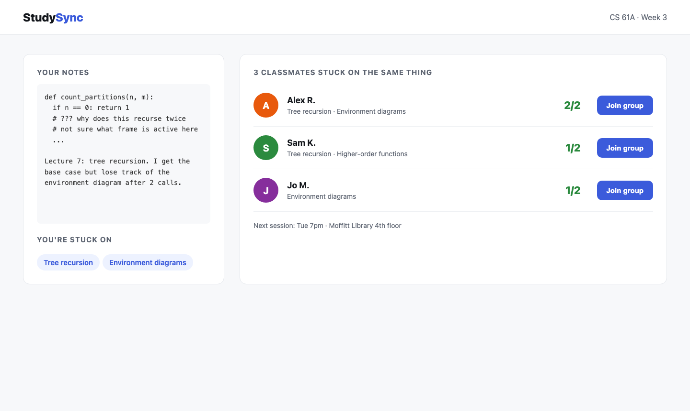

StudySync
Matches CS 61A first-years with classmates stuck on the same concept, straight from their own notes.

800 students. Week 3. Studying alone.
Intro CS first-years don't know anyone yet. "Looking for a study group" threads get dozens of replies and no matches.
Your notes decide your group
NotesPaste lecture notes or a problem-set attempt
→
ClaudeLabels what you're stuck on from 40 fixed course concepts
→
OverlapScores classmates by shared stuck concepts
→
GroupThree matches, one click to join
Matched on confusion
01
Stuck, not free
Others match schedules. We match the concept you can't get past.
02
Shared vocabulary
Syllabus concepts make any two students' notes comparable.
03
Zero setup
Paste notes, get a group. No profile, no survey.
Nobody should learn recursion alone.
Every intro class, every week.
Pull concepts from any course syllabus automatically, then pilot with one CS 61A discussion section.
Team
PriyaUpload and match screens
MarcusMatching API and Claude pipeline
LinDesign, seed data, demo
Built at Cal Hacks 13.0 with React, FastAPI, shadcn/ui, and the Claude API. Classmates are seeded demo data; the study session time is hardcoded.